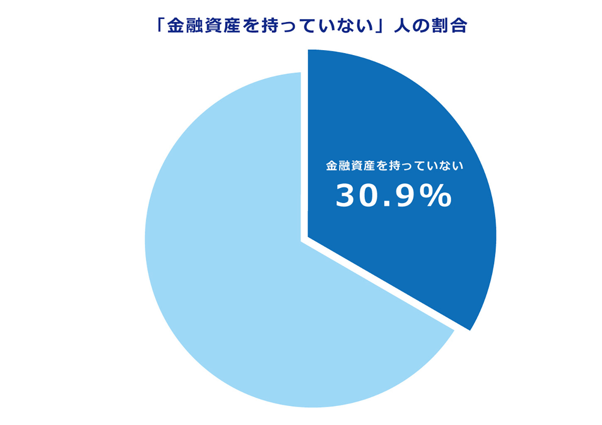
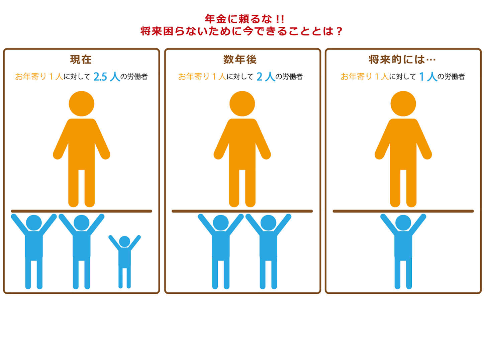
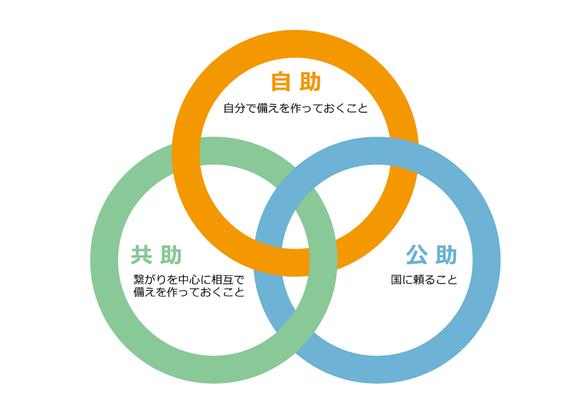
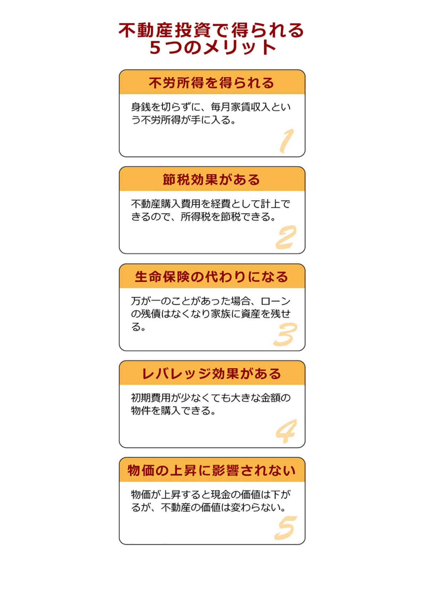

| お金が「確実に増えていく」資産形成術 〜不動産投資こそが老後安心できる最強の投資〜 | |
| 上田仁 | |
| Hitotsuku Publication (2018) | |
あなたは今の自分の年収に満足していますか？
将来必要になるお金の準備はしていますか？
多くの人は「今の年収に満足していない」「将来のことまで考えていない」と答えるのではないでしょうか。
今の時代、年収を上げることは簡単なことではありません。今後消費税の増税も控えてありますし、年金も縮小していくと言われています。その中で、将来に向けてお金を貯めることは非常に難しいものです。
そういった厳しい時代を生き抜く上で、私達がしなければいけないことって一体何でしょうか？
独立？ 起業？
もちろん起業して自分の力でお金を稼ぐことができるのであれば、それは幸せなことでしょう。
しかし、多くの人にとって、それはとても難しいことです。
どうやって起業したらいいのか？ 人脈は？ 資金は？ 家族は？
色々な問題が立ちはだかります。
リスクを冒してまで起業したいとは、なかなか思えないものです。
しかし、このままでは将来確実にお金で困る日が来ます。
だからといって、人生に悲観的になる必要はありません。
しっかりと計画を立てて資産形成していけば、誰でもお金に不自由のない生活を送ることは可能です。
特別な才能がなくても、増税や年金が減額される時代に、豊かに生きることができるのです。
ところで、資産形成と聞いてあなたは何を想像しますか？
貯金？ 投資？ 難しそう！ お金を持っている人がやってそう！ そもそも貯金と資産形成の違いがわからない！ など、人によって捉え方は様々でしょう。
しかし共通して言えることは、日本人はお金に対する知識が少なすぎるということです。
ただ、それは至極当然です。なぜなら日本は、世界の先進国の中でもお金の教養が少ない国だからです。
お金の教育が進んでいるアメリカでは、モノポリーというボードゲームを使って、小さい頃からお金の教育を受けます。モノポリーとは、資産を増やしながらゴールを目指す「すごろくゲーム」ですが、このゲームの存在すら知らない人って結構多いのではないでしょうか？
それだけ日本は、金融教育に対し意欲的ではなかったということです。
では一体、なぜ日本では金融教育がされてこなかったのでしょうか。
『金持ち父さん、貧乏父さん』の著者、ロバート・キヨサキ氏は「政府がお金のことを学ぶのを禁止したから」と言っています。
そして、政府がお金のことを学ぶのを禁止した理由は、「サラリーマンを育成するため」だそうです。サラリーマンとして働く人が多いほど、税金をしっかり納める仕組みができるから、サラリーマンとして働く人が多ければ多いほど、国が儲かるのです。
学校に行って、就職して、働いて税金を納めるのが当たり前。貯金をして、家を買って日本に住みながら税金を納め続ける、これが一般的で普通の生活だそうです。
そんな価値観を植え付けるため、そして、日本にしっかりと税金を納める人を育てるため、政府はお金の勉強をさせないそうです。
どこまでが本当の話かわからない都市伝説のような話ですが、日本の現状を見ていると、あながち嘘でもなさそうに思えます。
しかし、今までの当たり前は今後通じなくなります。普通にサラリーマンをしているだけでは、お金に困る時代が近づいてきています。
増税は進み、年金制度もあてにならなくなります。
これは事実です。
そんな、不確実な時代を賢明に生きるためには、起業して成功するような特別な才能がなくてもできる「資産形成」の手法を身に付ける必要性があります。
しかし、「資産形成と聞いても、基本的なところから分からない！」という人が多いと思います。そこで、「最初に読むべき資産形成の本」を作りました。
誰にでも理解できる内容となっていますので、少しでもお金の教養をつける手助けができれば幸いです。
あなたは、将来に向けてきちんと貯金をしていますか？
「毎月余ったお金を貯金に回しています」
「将来は年金もあるし、何とかなると思うから特に貯金はしていない」
など色々な人がいると思いますが、まずは１つ面白いデータを紹介したいと思います。
貯蓄広報中央委員会が、２０１５年夏に行ったアンケート調査「家計の金融行動に関する世論調査」というものです。
この調査によると、「金融資産を持っていない」と答えた世帯は、全体の３０．９％
だそうです。
つまり日本人の３人に１人は「貯金ゼロ」
だそうです。

ちなみに、「金融資産」とは運用のために将来に備えているお金のことで、預貯金、株式、生命保険、個人年金などを指します。一番馴染みが深いのは預貯金でしょうか。
ここでもう一つ注目したいのが、年代別の「金融資産を持っていない」人の割合です。
20
代３６．４％
30
代２７．８％
40
代３５．７％
50
代２９．１％
60
代３０．１％
70
代以上２８．６％
ということで、年齢が高くなって年収が増えたとしても、資産を形成できていない人が３人に１人もいるということです。
「でも日本人でこれだけ金融資産を持っていない人がいるなら、自分だってなんとかなるんじゃないの？ 国が救ってくれるでしょ」という声が上がってきそうなのでお答えします。
貯金０でも死にはしないでしょう。しかし、生きた心地はしないかもしれません。
老後は身体も不自由になってきますので働きにも出れませんし、お金は出ていく一方
です。年金は徐々に少なくなっているので、ただ生きているだけの生活を老後20
年以上送らないといけないのです。
20
歳過ぎから60
歳まで40
年働いたのにも関わらず、老後にヒモジイ思いをするのは嫌ではないですか？
私は絶対嫌です。できるだけ早い段階で資産を築いて、早期にリタイアしたいとさえ思っています。そして悠々自適な生活を送りたいと思っています。
私の場合、予定を前倒して資産形成できたので、リタイアすることも可能なのですが、今は自分の知識をできるだけ多くの人に伝えて社会貢献をしたいという新しい目標ができたので、そのために頑張っています。
あなたも老後にヒモジイ思いをしたくないと、薄々は思っていませんか？
豪遊できなくても、日々の生活に困らずに生きたいと思っているのではないでしょうか。
ただ、具体的にどれくらいの資産を形成する必要があるのか。そしてどのように形成すればいいのか、やり方がわからないという人は多いと思います。
実は、老後までに蓄えておくべき資産の額は国から公表されています。まずはそれを紹介していきたいと思います。
ここでは、早期リタイアして悠々自適に暮らす話は一旦置いておいて、普通の人が普通に暮らす上で必要となる資産について試算してみます。
日本人の平均寿命の84
歳（男性81
歳、女性87
歳）まで生きるとして、計算してみましょう。60
歳から85
歳までの約25
年間もの間、老後の人生があることになります。
また、ゆとりのある生活を夫婦２人でするといくらかかるかと言うと、月々34
万９千円
です。これは国が試算して公表されている数値です。
あとはこれら数字を掛け合わせるだけです。
約35
万円×12
か月×約25
年＝約１憶５００万円
これが老後夫婦２人で必要な金額
です。
どうですか？ 結構大きな金額ではないですか？
「ちょっと待って、でも年金が貰えるでしょ？」
はい、その通りです。
大学卒業後22
歳からサラリーマンとして働いた場合、約２１．９万円が夫婦で支払われます。ちなみに自営業の方だと約13
万円程度です。
年金は65
歳から支払われるので、65
歳から平均寿命の約85
歳までの20
年間支払われます。
約22
万円×12
か月×20
年＝約５３００万円
これが年金として受け取る額
です。
では「老後に必要なお金」から「老後に受け取る額」を引いてみましょう。
１憶５００万円―５３００万円＝５２００万円
この金額が自力で形成しなければいけない金額
です。
貯める自信はありますか？
人生の中には、結婚だとかマイホームの購入だとか様々なイベントで出費が必要ですが、その中でこれだけの金額を貯めないといけないのです。
しかも、年金制度はどんどん厳しい傾向にあります。今は65
歳から年金が貰えますが、これも年齢が引き上げられるという噂ですし、受給額も引き下げられるでしょう。
つまり、５２２０万円よりももっと多くの金額を貯めておかないといけないのです。
ここで、「年金」についてもう少し詳しく紹介していきたいと思います。
将来、「年金の受給額が下がる」とか「受給年齢が上がる」と聞いて、「何でしっかり税金を払っているのに、年金の受給額が下がるの？ 増税もしているのに」と思う方もいるかもしれません。
これは、少子高齢化が関係しています。
年金は、自分で払ったものが将来返ってくるのではなく、今いる年金受給者達に対して、今の働く世代が負担していく制度
です。
今は労働者２．５人で１人のお年寄りを支えているのに対して、将来は２人で１人を支える、１人で１人を支える時代が来ると予想されています。

１人で支えられる額は少ないですから、貰える額は当然下がりますよね。
ですから、「将来は年金があるから大丈夫」という発想はとても危険です。
年金が全く貰えないという話にはならないとしても、貰える額が下がることは覚悟しないといけませんし、資産形成を計画する上では、年金は「貰えない」ものとして考えておいてもいいかもしれません
。
いずれにしても、最低５０００万円。年金の受給額が下がることを考えると、１億円を目標として資産形成をする必要があります。
この額が貯められないと、老後に大変な苦労をすることになります。
最近ニュースでよく出る「老後破綻」という言葉を聞いたことはありませんか？
定年するまでに５０００万円という資産を形成できなかった人、特に冒頭で紹介した貯蓄０の人達が、老いてから生活できずに困っているという話です。
資産形成は60
歳までに終わらせないといけないですが、その認識がなかった人が定年後にスーパーのアルバイトや交通整理をして、お金を稼がざるを得なくなっている
のです。
年金の受給開始年齢が60
歳から65
歳まで引き上げられたことに伴って、65
歳まで働ける企業が増えてきてはいますが、給料は60
歳までの半分程度しか支給されないことがほとんどです。
「でも退職金があるのでは？」と思う人がいるかもしれませんが、退職金は多くて２０００万円程度です。しかも40
年間同じ企業に勤め上げた人しか、この金額は貰えません。
終身雇用制度が崩壊したと言われる日本では、40
年勤め上げる人の割合が少なくなっていますし、退職金という制度も縮小傾向にあります。
要は退職金とか年金とか、不確実なものをあてにしていると、「こんなはずじゃなかった」という事態に陥る可能性が高いということです。
そして、そのような事態に陥ると、もう取り返しが付かないということです。
若いうちであれば、お金がなければ働くことができます。
しかし、老後は働けない身体になっていることが多いです。
体力もなくなっていますし、膝が痛くなっているかもしれません。
若い頃と違って、貰える給料も少なくなります。
スーパーの経営者の立場になって考えてみればわかることですが、若い人とおじいちゃん。どっちに仕事をお願いして、どっちにお金を多く渡せば成果が上がると思いますか？
当然若い人ですよね。老いたらお金が稼げないのです
。
そして、おじいちゃん側としても働きたくないですよね。60
歳を超えてからスーパーで働くなんて、考えただけで発狂しそうです。
でも、スーパーで働くおじいちゃんがいるのも事実です。
老後に働かないようにするためにも、コツコツと資産を形成することが大切ですね。
あなたには、絶対に老後破綻をしてほしくないと思います。
ところで、老後に関して面白いデータがあるので、紹介していきたいと思います。
高齢者がリタイアする前にやっておくべきだったと後悔していることが、ランキング形式で『PRESIDENT』より発表されています。その第１位から５位がこちらです。
第１位 もっと貯金をしておけばよかった
第２位 もっと色々なことを勉強すればよかった
第３位 行きたい場所に旅行すればよかった
第４位 年金で暮らせるような生活設計をしていればよかった
第５位 退職後も働ける資格を取得すればよかった
この様にお金に関するものがほとんどです。
第１位の「もっと貯金をしておけばよかった」なんて絶対に言いたくないですよね。
でも、今までの自分の行動を振り返ってみて、貯金に満足したことってありますか？
ついつい使っちゃって、お金がいつも足りてない人って結構多いと思います。
そのまま改善することなく時間が過ぎて、定年する歳になると、このランキングのようなことを言うようになるのです。
普通の人が普通に生活していたら、こういった後悔をするものです。
でも、今あなたは、「資産形成をしないと将来まずいことになる」と認識はできたはずです。
まだ若いあなたが、将来「もっと貯金をしておけばよかった」なんて言わなくてすむように資産形成することは、「今」ならできます。
老後破綻しないための資産形成は、若い「今」なら無理なく始められる
のです。
早ければ早いほど準備が楽になりますので、できるだけ早く資産形成を始めることを強くおすすめします。
ところで、資産形成って何でしょう？ どうやってすればいいでしょう？
その疑問にお答えしていきたと思います。
「資産形成」を辞書で調べると、「将来の自分と家族を養っていく資産を形成する（つくる）こと」などと出てきます。
そういった意味では、貯金も立派な資産形成の一部です。ただ、貯金だけでは不十分なのです。
なぜ不十分かというと、お金を銀行に預けていても全く増えない
からです。
そして、５０００万円だとか１億円だとかいう金額を、貯金でコツコツ貯められる人ってすごく少ないと思うのです。
だから３人に１人は貯蓄が０なわけです。
じゃあどうすれば？ と言うと、「もっと効率よく増やす」べきです。
そういった方法はあります。
そして、そういった方法を知るべきです。
何も怪しい方法を紹介するつもりはありません。インターネットを使ったマル秘○○とかではありません。
広く一般的に「資産形成」に使われる方法で、意外とみんなに知られていない方法を紹介していければと思います。
なぜ知られていないかというと、学校で教えてくれないからです。
バブル世代に生きた人は給料も多かったし、お金は銀行に入れているだけで勝手に増えました。終身雇用で退職金も多かったですし、年金も支払われていたので、資産形成の方法なんて学校で教える必要がなかったのです。
その時代の名残があるから、今も学校でお金の教育がされていません。
あなたが資産形成の方法を知らなくても恥じることはありません。
むしろ、この書籍を手に取っている時点で、あなたはすごく意識が高い人なはずです。
徐々に資産形成について学んでいきましょう。
資産形成を考える上で、最初に押さえておかなければいけない知識があるので、紹介していきます。
それは「自助・共助・公助」
というものです。
この概念は災害時によく使われるのですが、近年は資産形成の話の中で頻繁に出てくるようになりました。
「自助」
とは「自分で備えを作っておくこと」
で、貯金や投資がこれに当てはまります。
「共助」
とは「繋がりを中心に相互で備えを作っておくこと」
で、代表例は保険です。
そして「公助」
とは「国に頼ること」
。社会保障がこれに含まれます。いわゆる年金です。

「自助・共助・公助」のどれか１つで資産形成を行うのではなく、３つのバランスをとることが重要
です。
ただ、３つのうち「公助」については、年金が少なくなっていくので、「自助と共助」の割合を増やしていく必要があります。
「公助」の年金については既にお話ししましたので、「共助」の保険について少し紹介していきたいと思います。
保険には色々の種類がありますが、大きく分けて「積み立て」と「掛け捨て」があります。
資産形成においては「積み立て」が一番有効
です。
「積み立て」と「掛け捨て」は両方とも保険としての役割がありますが、「積み立て」には保険の機能にプラスして、「お金を貯める」役割があるからです。
銀行の金利は非常に低いので、預けておいて増えることはありませんが、保険の「積み立て」は、保険会社にしっかりと運用してもらえるので、それなりに増えます。
どの会社の、どの保険が良いか？ という話は控えますが、毎月の保険額が、掛け捨てのものは、おすすめできません。
できるだけ早いうちに、「積み立て」の保険に切り替える必要があるでしょう。
ただ、「積み立て」の保険に加入したとしても、保険だけでは到底５０００万円や１億円といった金額には到達しません。
ここで活躍するのが「自助」です。そうです。投資です。
投資と言うと、難しいというイメージがどうしても先行してしまいますが、資産形成には欠かせない方法ですので、詳しく見ていきたいと思います。
投資というものを簡単に表現すると、稼いだものを「増やす」ことです。
投資には、株式投資とか、積み立てＮＩＳＡや不動産投資、ＦＸなど様々なものがありますが、どれを使っても増やすことは可能です。
ただ、難易度が高かったり、リスクが高かったりして、資産形成に不向きなものもあります。
しかし、「投資」というものは、そのリスクとリターンの関係さえしっかり把握してしまえば怖いものではありません
し、怪しいものでもありません。
国も投資を推奨しています。
年金制度が弱くなっている今、国は、国民が積極的に投資を行って自分の力でお金を増やすことを推奨しているのです。
老後破綻する人が何人も出てくると、国として成り立ちませんからね。
何とか国民１人１人が、年金の支給額が減っても自立して生活できるようにするために、積極的に投資を推奨している
のです。
実際に、個人で投資を行うことで資産が膨らんでいる国があります。
アメリカです。
アメリカでは国民の半数近くが個人で投資を行っています。
日本で投資を行っている人は20
％
程度ですから、大きな開きがありますよね。
ここでお伝えしたいことは、投資とは難しいとか、怪しいものではなく、日本の国が推奨しているものだということです。
そして投資とは、国によっては国民の50
％
が行っている「普通」のことなのです。
日本も金融の知識が低い低いと言いながら、20
％
の人が投資を行っています。
あなたにできないはずはありません。
ただ、始める上で少し前提となる知識が必要ですから、紹介していきましょう。
投資で一番重要な知識は、リスクとリターン
の関係です。
投資には、リスクがつきものです。１００％
増えるなら誰でもやっているでしょう。
リスクが小さいとリターンも小さいし、リスクが大きいとリターンも大きくなる傾向があります
。
そして投資の世界では、このリスクとリターンの関係を３つに分類することが多いです。
「ローリスク・ローリターン」「ミドルリスク・ミドルリターン」「ハイリスク・ハイリターン」
の３つです。
「ローリスク・ローリターン」の代表例は、貯金やＮＩＳＡです。銀行にお金を預ける「貯金」も投資の一種になります。金利が低すぎるので、投資と思っている人は少ないのではないでしょうか。
銀行が破綻しない限り、預けたお金は返ってきますので「ローリスク」の投資です。そして、預けて増えるお金が少ないので「ローリターン」な投資とも言えます。
「ミドルリスク・ミドルリターン」の代表例は、不動産投資です。
リターンはそこまで大きくないけれども、リスクも抑えることができる投資になります。
「ハイリスク・ハイリターン」の投資は、ＦＸ、株、仮想通貨を指します。
正直、これは難易度が高い
です。元金がなくなる可能性もありますし、やり方次第ではマイナスになる可能性もあります
。投資初心者にはおすすめできません。
私が資産形成でおすすめしているのが、「ミドルリスク・ミドルリターン」の投資の代表例「不動産投資」
です。
「不動産投資」をあまり聞き慣れない人からすれば、お金持ちの人がやっているイメージかもしれません。
バブル崩壊を経験している人は、「不動産なんてとんでもない」と感じる人もいるかもしれませんが、今は不動産価格も安定しているので「ミドルリスク・ミドルリターン」の投資と言えます。
バブル時代に行われていた不動産投資は、不動産価格の異常な値上げに注目した「ハイリスク・ハイリターン」の投資です。今でいうところの、仮想通貨みたいなもので、大きく上がることもあれば、大きく下がることもあったのが昔の不動産投資です。
少しだけ専門用語を使うと、不動産投資には「キャピタルゲイン方式」と「インカムゲイン方式」があります。
「キャピタルゲイン方式」とは、投資用の不動産を価格が低い時に購入し、景気や需要の変動によりその価値が上昇した際に、売却することによって利益を得る方式のことを言います。バブル時代の不動産投資です。
一方で「インカムゲイン方式」とは、不動産を借主に賃貸して、家賃収入で利益を得る方式のことを言います。
今の日本の不動産投資では、「インカムゲイン方式」が主流で、資産形成においても家賃収入を安定的に得ることを目的としています。
巷でよく言う「不労所得」が、資産形成を行う上での不動産投資の目的ということです。
不動産投資には、何か特別な能力が必要だと誤解されがちです。
不動産の価格を算定する力やマーケティングをする力、そういったものが必要だと思っている方がたくさんいます。
しかし、不動産投資を始める人の多くは、不動産に関して全くの素人であることがほとんど
です。
それでも最終的に、みんな自分の資産を形成できています。確立された資産形成の方法があるから
です。
そして、不動産投資は他の投資に比べても、非常に安定的に資産を増やすことができます
。
株やＦＸ、仮想通貨といったハイリスク・ハイリターンの投資は、当たれば大きいですが、外れたら資産を大きく減らしてしまいます。資産形成をしていく上では、そういったギャンブル性の高い投資よりも、着実にコツコツと資産を積み上げられる方法が向いていると言えます。
不動産投資には、他にもメリットが目白押しです。
例えば、「初期費用がなくても始められる」
ことです。これは意外だと感じる人が多いかもしれませんが、不動産投資は基本的に銀行からお金を借りて行うものです。そのため、初期費用は少なくても問題がないのです。
投資にはたくさんの種類がありますが、銀行がお金を貸してくれる投資は、不動産投資以外にありません。それは不動産という有形のものに投資をするので、万が一銀行にお金を返すことできなくなっても、不動産を売却することで返済することができるからです。
それだけ「手堅い」投資だということです。
さらに不動産投資で嬉しいことは、お金を返済するのはあなたではなく、物件に住む入居者
だということです。
お金を借りるのは不動産を借りるあなたですが、入居者から家賃を得ることができるので、お金を返済しているのは実質的には入居者です。
そして、入居者が完全にマンションの購入費用を払い終わってくれると、もうそのマンションはあなたのもの
です。
そこからは家賃収入だけが手に入ります。
夢の不労所得の獲得です。これで年金がなくても、不労所得だけで生活できそうです。
その他、不動産投資には、経費として計上できるなどのメリットがたくさんありますが、それについては次の章で詳しくみていきましょう。
不動産投資のメリットについて、１つずつ整理していきたいと思います。
まず、不動産投資の一番のメリットは、何と言っても毎月安定した収入を得られるということです。
例えば30
歳から不動産投資を始めて、60
歳までに８万円の家賃収入のあるマンション３戸の購入費用を完済してしまうと、その後は家賃24
万円が丸々入ってきます。
たとえ年金が縮小して10
万円しか貰えなくなっても、家賃収入から得られる金額と合わせると、34
万円の収入を安定的に得ることができます。これで夫婦２人であれば、ゆとりある暮らしができます。
そしてその不労所得を得るために、あなたは身銭を切る必要がありません
。
他の多くの投資では、例えば自分の資産１００万円を何かに投資して、上がるか下がるか祈る必要がありますが、不動産投資ではあなたのお金は何も変動しません。
マンションを購入する費用は銀行から借りられますし、それを返済してくれるのは実質的には家賃を支払う入居者です。
あなたはただ年月が過ぎるのを待つだけで、マンションを手に入れることができる
のです。
確かに、仮想通貨のように１日で何十万もの利益を得ることはできません。しかし何十万もの損失を被ることもないのです。
着実に１歩１歩、自分の資産を増やすことができるのです。
もちろん、不動産投資以外の投資も魅力的ですから、挑戦することは止めません。もしかすると、若くして大金を手に入れる可能性だってあります。
しかし忘れないでほしいのが、株やＦＸ、仮想通貨はハイリスク・ハイリターンだということです。勝つこともありますが、負けることもあります。そして負けると、その負けを取り返したくなる中毒性もあります。
そうして、大きなマイナスを被ってしまった人を、私は何人も目の当たりにしています。
ですから、私のおすすめとしては、軸足はしっかりと不動産投資に置いておいて、余剰資産ができてから、余剰資産の範囲内で他の投資をすることです。
そうすれば、仮に他の投資で負けたとしても、あなたの資産形成に大きなダメージはないでしょう。
不動産投資には節税効果もあります。不動産購入後の５年程度は諸費用や減価償却費用が発生するので、その費用を経費として計上することで、支払う税金を少なくすることができるのです。
サラリーマンをしている人は、給料に所得税がかかってきますが、経費が認められると、給料から経費を引いた金額にまで税金を抑えることができます。例えば、額面年収５００万円の人が４００万円の経費を計上することができると、収入１００万円として所得税が計算されます。５００万円の所得にかかる所得税に比べ、１００万円の所得にかかる所得税は微々たるものです。
普段サラリーマンをしている人にとって、経費のイメージは非常に湧きづらいと思いますが、事業をしている人はこの経費という制度を非常に上手く活用しています。
売上が多い場合、税金がたくさん取られますが、取られるくらいなら自分のために使おうと経費をできるだけ計上して、収支を０に近づけようとします。そして税金をあまり払うことなく、自分の資産を増やしていくのです。要は国に払うはずだったお金で、自分の資産を形成しているのです。
こう書くと、何かとても悪いことをしているようなイメージを描くかもしれませんが、経費とは売上を上げるために必要となったお金のことで合法なものです。経費として認められるかどうかは、法律によって細かく規定されていて、不動産投資に関わる費用の多くは経費として認められている
ので、胸を張って税金を少なくすることができます。
そもそも国は、お金がどこかに滞留していることを嫌っています。貯めないで、お金を使え！ と思っています。お金がどこかに貯まっていては、経済が回らないから当然ですね。
ですから、貯められそうなお金には税金がかけられます。国民がどんどんお金を使うことを望んでいるので、経費であれ何であれ、お金が使われることについては喜ばしく思っています。
イメージ的には、仮に額面年収５００万円の人が５００万円分経費を計上したとしても、「お金を使って経済を活性化してくれたのか。では税金を０にしよう。ありがとう」という感じです。
あなたも経費という制度を使ってどんどん節税し、そのお金で自分の資産を形成しましょう。
不労所得を得ることができたり、節税効果があったりなど、魅力の多い不動産投資ですが、多くの人にとって一番の懸念事項は「自分は銀行からの借り入れを返しきれるだろうか？」ということではないでしょうか。
病気になるかもしれませんし、交通事故に遭って返済できなくなるかもしれません。
しかし、この点においても不動産投資にはメリットがあるのです。
不動産を購入する際に資金を金融機関から借り入れると、団体信用生命保険に加入しなければなりませんが、この保険が、自分に万が一のことがあった場合に家族を守る役割をするのです。
具体的には、ローンの返済期間中に死亡または高度障害者となった場合、団体信用生命保険が適用され、ローンの残債は保険金から返済されます
。
つまり、残された家族には無借金のマンションが残り、毎月の安定した家賃収入が継続される
のです。
残された家族に保険のような役割も果たせるのは、数ある投資対象の中で、不動産投資だけです。
今保険に入っていない人にとって、不動産投資を始めることは資産形成ができるだけでなく、保険に入る意味もあるのです。
不動産投資は少額資金から始められる投資だという話は少ししましたが、これは投資をする上で非常に大きな利点です。
と言うのも、株式であれＦＸであれ仮想通貨であれ、最初にまとまった金額がないと勝つことが極めて難しいからです。
例えば株式投資で年に10
％
の利益を得ることは非常に難しいですが、１００万円しか資金がないと、年に10
万円の利益しか出すことができません。
１０００万円の資金があれば、１００万円の利益を上げることができますが、投資を始める時にそれだけの多額の資金を持っている人はまれです。
だからと言って「株をするからお金を貸してください」と銀行に相談しても、貸してはくれません。銀行は回収が確実な案件でないと貸してはくれないのです。
ですから、最初から大きな金額の投資ができる不動産投資は、非常に珍しい投資手法と言えます。
投資の世界には、レバレッジ効果というものがあります。これは、少ないお金でどれだけ多くのお金を動かせるかという投資の指標のことを言いますが、初期費用が少なくても大きな金額を投資できる不動産投資は、極めてレバレッジ効果の高い投資と言うことができます。
そして、銀行の借り入れで特徴的なのが、会社員の方が自営業の人よりも信用が高く、ローンを組みやすい
ということです。
自営業の方は銀行からの融資がおりにくい可能性があります。会社員の方に比べると今年稼げても来年稼げない可能性があるからです。それに比べて、会社員は毎年安定して収入を得ているので、銀行からの信用が高いのです。
その意味で、会社員と不動産投資は非常に組み合わせが良いと言えるでしょう。
不動産投資のメリットを書き出せばきりがないので、最後に不動産投資と物価の関係について紹介して終わりにしたいと思います。
今、日本政府は物価を上げようと必死です。具体的には毎年２％
ずつ物価を上げようとしています。経済が成長していく上では、物価が上昇していくインフレと呼ばれる状態になる必要がありますが、今の日本はこのインフレの状態にあります。
少し前までバブル後の不況が長引いて、物の値段が下がるデフレの状態でしたが、最近はインフレに転換しつつあります。これからは物の値段がどんどん上がっていくでしょう。
例えば、今年１００円だったパンが１年後は１０２円になっています。すごく緩やかな変化ですので、実感はないかもしれませんが、毎年○○が値上げしたというニュースはあなたも聞いたことがあるでしょう。
ここで重要なのが、インフレ局面では貯金をしていると損をするということです。
今年１００円だったパンが１年後は１０２円になっているように、「今年１０００万円の物」は来年１０２０万円になっています。１０００万円を銀行に預けていても来年も１０００万円のままですから、「今年１０００万円の物」が来年は買えなくなりますね。
つまり、銀行にお金を預けていても、徐々にその価値は失われていく
のです。
一方で不動産は物です。パンと同じです。物価が上がれば、今年１０００万円の物件が来年は１０２０万円になります。
現金として置いておけば失われたあなたの資産は、不動産を買うことで守ることができる
のです。
ここまで不動産投資のメリットについて記載してきましたが、メリットがあればデメリットもあるのが世の常です。しかし、不動産投資のデメリットは、知識を蓄えることで減らすことができるものです。
不動産投資を行う上で欠かせない知識となりますので、しっかりと身に付けましょう。

不動産投資の中で一番大きいリスクは、「空室リスク」です。
空室が発生すると、その間は収入が入りませんし、空室の期間が長くなると家賃を下げる必要さえ出てきます。
ですから、空室期間を発生させないことが不動産投資の鉄則
になります。
このデメリットを回避するには、これから紹介する３つのポイントが重要になります。
それは、「空室が発生しないような魅力的な物件に投資する」「物件の魅力を増やし続ける」「サブリースを利用する」
の３つです。
まず、「空室が発生しないような魅力的な物件に投資する」ということですが、これは都心の駅から10
分以内の築浅物件を選ぶ
ということです。
あなたも自分の物件を選ぶ時に、できるだけ駅から近い物件を選ぶでしょうし、築浅の綺麗な物件に住みたいのではないでしょうか。不動産のオーナーになる時も、借りる人の気持ちを忘れないことが、優良物件を選ぶ上でのコツになります。
風呂トイレ別だとか、収納が充実しているとか、オール電化だとか、オートロックが付いているとか、そういった「この物件なら自分が住みたい」「貸すのがもったいない」と感じるような物件を選ぶことがポイント
になります。
ただ、建物というのはどうしても経年劣化してしまいます。見た目も汚くなりますし、設備も古くなります。そこで、「物件の魅力を増やし続ける」ということが非常に重要になります。最近は特にリノベーションが流行っていて、マンションそのものが古くなっても、中が綺麗な物件は非常に人気です。壁紙を少しオシャレなものに変えるだけで印象を劇的に変化させることができるので、常に入居者を惹きつける物件を保つ努力が大切です。
３つ目の「サブリースを利用する」という手法は、会社員に人気の方法です。
サブリースは、あなたが直接入居者に部屋を貸すのではなく、管理会社に貸して、管理会社が入居者に貸す手法です。要は「又貸し」している状態です。
あなたが契約するのは管理会社ですから、入居者が入っていようがいなかろうが、あなたには収入が継続されます
。直接入居者に貸す場合に比べて、収入は90
％
から95
％
まで減ってしまいますが、空室リスクを家賃の５％
から10
％
の金額でなくすことができると考えると、非常にお得です。
※残りの10
％
は管理会社への管理費（オーナー業務委託）に当てられます。
不動産投資のデメリットとして空室リスクの次に挙げられることが多いのが、地震や台風などの災害による被害です。
もちろん物件に保険をかけてしまえばリスクを減らすことができますが、その分費用が膨らんでしまいます。
そこでお勧めしたいのが、築浅の物件を選ぶ
ということです。
実は、昭和56
年に建築基準法が改正され、それ以降に建った建物は地震が来ても倒壊する確率が非常に低くなりました
。
実際に昭和56
年以降に建てられたマンションは、阪神淡路大震災や東北地震でも倒壊した物件は０です。
更に最近は、２００年マンションと言われるものが登場するなど、耐震性はどんどん強化されてます。ですから、保険にお金をかけることも大切ですが、コストを増やさないためにも、物件選びの段階で築浅物件を選ぶことが非常に重要になります。
また、火事に関しては、鉄筋コンクリート作りのマンションであれば、火事が起こっても隣の部屋に燃え移らない
ように設計されています。最近は木造でも火事に強いものが出てきていますが、やはり鉄筋コンクリートの物件を選ぶことが防災面では重要になります。
実は不動産投資初心者にありがちなミスが、割高の物件を購入してしまうということ
です。
特に新築の物件はおすすめしていません。確かに新築は綺麗で、入居者の人気は高いですが、マンションは人が一度住むと急激に値段が下がる
という特性があります。
新築の高額物件を購入し、強気な家賃を設定しても、入居者が入るのは最初の１人だけという場合が結構多く見受けられます。そうなると、家賃を下げざるを得なくなります。メンテナンス費用にもお金が回らなくなるので、「物件の魅力を増やし続ける」という観点からも非常に不利な状況に追い込まれます。
そういった特性を把握し、新築ではないけれども築浅で魅力的な物件を探すことが重要
です。
魅力的な物件とは、都心で今後も人口が減少しないエリア、具体的には学校・オフィスに近いところに建っている物件
になります。
そういったエリアでは、多少建物が古くなっても借り手が途絶えることはありません。
新築ではないけれども、築浅の物件は、長い間不動産価格が安定しますので、家賃の引き下げを行うこともなく継続的な収入を確保することができます。
不動産を貸す側としても新築は魅力的に映り、奮発して購入しがちですが、あなたの目的はあくまで資産形成です。長く安定的に収入を得るためにも欲張りは禁物です。
不動産は、株やＦＸのような投資商品と比べると流動性が低い特徴があります。
そのため、売りたい時にすぐに現金化できないというデメリットがあります。
ただ、最近は年々流通量が増えており、首都圏であれば中古マンションが毎年４万件弱も売買されています。
物件を売り出してから最速で１ヶ月後に入金まで完了することができますので、流動性の低さが気になる方も、都心のマンションを購入すれば、さほど流動性の低さは気にならないでしょう。
売る時にも、「空室が発生しないような魅力的な物件に投資する」「物件の魅力を増やし続ける」というポイントが非常に効いてきます。
お客さんが入居者から物件の購入者に代わるだけで、みんな良い物件に住みたい、購入したいと思う気持ちは一緒です。
東京23
区で職場へのアクセスが便利な立地、物件条件がある程度良い物件であれば、みんなが欲しいと思いますので、流動性の低さが問題になる可能性は非常に低いでしょう。
ただ、建物は生き物のようなもので、手入れをするかしないかで随分と価格が変動するものです。常日頃の手入れの具合が、将来の資産の流動性も左右すると言っても過言ではありません。
不動産投資は、他の投資商品と比べると手続きに手間がかかります。
例えば、株式売買を行う場合は、口座開設後すぐに売買ができますし、税金に関しても自動的に計算してもらうことができます。
それに比べ、不動産投資は売買契約から抵当権の設定や移転登記など、複雑な業務が山のようにあります。それだけ不動産に対する社会の興味関心が強く、法律の縛りも強いということです。
ただ、大抵の手続きは仲介会社や司法書士、税理士といったプロの方が進めてくれますし、購入後年数が経つことで徐々に手間が減ってきます。めんどくさいことはどんどん専門家にお任せしてしまいましょう。
以上、不動産投資の５つのデメリットと、その対処法について紹介してきましたが、メリットに比べてデメリットってかなり少ないと思いませんでしたか？
ここまで読むと「自分も不動産投資を始めないと」と思ったのではないでしょうか。
少なくとも「資産形成は始めないと」と思ったはずです。
でも実際に行動に移す人は、非常に少ないのが現状です。
無理もありません。人間とはそういうものなのです。
しかし、お金持ちとか、実際に資産を形成している人は、すぐに行動しています
。
すぐに行動できるから資産を形成できる
のです。
そして、資産を形成できる人は、人間の「すぐに行動できない」という特性を理解して、それを克服する方法を知っています。
不動産投資は難しいものではありません。誰でもできる！ とまでは言いませんが、非常に再現性の高い資産形成法であることは間違いありません。
つまり、資産が形成できるかどうかは、「あなたが、やるか、やらないか」にかかっている
のです。
もし、あなたが本気で資産を形成したいと願っているのであれば、これから紹介する、「すぐにできるようになる方法」
を実践してみてください。
これは何も不動産投資に限ったことではありません。
行動できる人間になるということは、成功にぐっと近づくことです。
簡単なことですから、ぜひ習得してください。
資産形成を行う上では、「今すぐやる」ということが一番大切です。
なぜなら、今始めれば月３万円ですむ金額が、先延ばしして10
年後に始めれば、月10
万円でも間に合わない
かもしれないからです。
しかし、人間というのは先延ばしにするものです。
あなたも学校で夏休みの宿題が出た時に、ギリギリまで行動できなかった経験があるはずです。でも学校の宿題はしないといけないし、勉強しないと将来大変な目に遭うことも分かっていたはずです。でも、できない。これが人間なのです。
人間は無意識のうちに、物事の優先順位を決めてしまっています
。そして、学校の宿題だとか資産形成は重要だけど、今すぐ始めなくてもいいと無意識に決めてしまっている
のです。
ここで１つ例を出してみましょう。
目の前で子供が道路に飛び出しています。この状態で子供の手を引っ張ると、助けることができます。
あなたは迷わず子供の手を引っ張るのではないでしょうか？
トイレに行った後で助けようとはならないはずです。
子供を助けることは重要なこと
ですし、今やらないと手遅れになる緊急なこと
でもあります。これは、何も考えていなくても、誰もが最優先だとわかることです。
逆に重要でもないし緊急でもないことは、何も考えなくても後回しにされます。
例えば、仕事の会議中にアダルトビデオを観たくなりました。ここで、上司に「急用ができたので帰ります」と言ってビデオ屋に行く人がいるでしょうか？
ヒトはこうやって優先順位の高いものから処理していき、優先順位の低いものは忘れていきます
。
物事は緊急性と重要性で４つに分類することができます。
重要でも緊急でもないこと
重要ではないけど緊急なこと
緊急ではないけど重要なこと
重要かつ緊急なこと
この４つです。
この中で注目してもらいたいのが、「緊急ではないけど重要なこと」
です。
これは、多くの人が先延ばしにして後悔してしまうこと
です。
先程の学校の宿題や学生の勉強、資産形成がこれに当てはまります。テストがないのにコツコツ勉強できる人は少ないので、テスト前に慌てて一夜漬けして大変な目に遭います。
テストも何もなければ、日々の勉強に緊急性はないですよね。
勉強しないからといって、毎日通知表が親に届けられることもないし、テストもせずに勉強の理解度が親に通知されることもありません。
今やってもやらなくても大して問題にはならない。緊急性はないのです。
でも、勉強することが重要かどうかと言えば重要です。
テストの点数もとれない。通知表も最低評価。こんな状況では、親に怒られるどころの騒ぎではないです。行きたい学校にも行けないし、就きたい職業にも就けません。
緊急じゃないけど重要なこと。このゾーンに含まれていることは、すごく重要なことばかりです。
勉強以外で言えば、例えば健康もこのゾーンに含まれます。
毎日３食カップラーメンとコーラを摂取していても、すぐには問題になりません。
しかし50
年続けるとどうなるでしょう。もしかしたら健康でピンピンしているかもしれませんが、入院しているかもしれません。
そして、将来の準備もそうです。
年金がどんどん下がって将来貰えるかどうかもわからない。
税金は上がって、貯蓄はできなくなってきている。
将来はきっとお金が足りなくなる。だから貯めよう。これはすごく重要なことです。
ただこれは、今始めなくても特段問題は生じません。
だから「緊急ではないけど重要なこと」のゾーンに入ってしまうのです。
お金持ちや資産形成に成功している人は、「緊急ではないけど重要なこと」をすぐにやるから成功しています
。他の人がすぐにできないことをやっているわけですから、成功するのは当然ですよね。
今勉強しなくても、すぐに問題は起きないけど、コツコツと勉強するから成績が伸びるのです。資産形成においても、今すぐ始めなくても問題は生じません。しかし、すぐ始める人だけが資産を形成できていることは事実
なのです。
では、「緊急ではないけど重要なこと」ゾーンに含まれるものを、どうすれば「すぐにできる」ようになるのでしょうか。
「緊急ではないけど需要なこと」には共通点があって、みんな「いつまでにやればいいか」に注目してしまって、「まだ大丈夫。まだ大丈夫」と先延ばししてしまうのです。
でも現実世界では、いつまでにやればいいのかを知っているだけでは何も変わりません。
いつ始めれば間に合うのか
。これを知らないと何も始まりません。
特にお金に関しては、ビジネスを始めない限り爆発的に収入が上がることはありません。
今貯金できないのであれば、５年後も10
年後もできていません。
今まで何十年とかけてできていなかったことが、急にできるようになる可能性は非常に少ないです。
今始めれば月３万円ですむ金額が、先延ばしして10
年後に始めれば、月10
万円でも間に合わないかもしれません。
毎日カップラーメンとコーラを食べている人が、病気になってから健康的な食事に変えてももう手遅れなのです。
「孝行のしたい時分に親はなし」ということわざをご存知でしょうか？
「親の気持ちが分かる歳になって孝行したいと思っても、親はもう生きてはいない。親の生きているうちに孝行しておけばよかったと後悔することが多い」ということを表したことわざです。
親孝行なんてどうでもいいと思っている人は少ないはずですが、実際にできている人は少ないのではないでしょうか。
もし、いつか親孝行をしようと思っているのであれば、それを始めるのは「今」であるべきです。
将来への準備、災害対策、勉強、親孝行。こういった緊急ではないけど重要なことは、緊急でないがために先延ばしにされがち
です。
気付いた時にはもう間にあわないということが、しばしば起こります。
いつまでにやればいいかではなく、いつ始めれば間に合うのか
。
こう考えないと最終的には後悔することになります。
「いつ始めないといけないのか」というと「今」なのですが、具体的に何をどれだけ？ という話がないと、日々の目標が決まりません。
そこで、おすすめなのが、資産形成のプロに相談する
ということです。
資産形成のプロに相談すれば、あなた個人の具体的な人生プランについて適格な答を出してもらえます。
人によって年収も違いますし、人生においてやりたいことも違います。お金の使い方も違うので、一般論が当てはまらないことも多いです。
しかし、自分の人生にかかるお金を個別に試算してもらうと、一気に現実味が帯びます
。
自分の人生の収支計画を、人生のできるだけ早いタイミングで試算しておくことは、あなたの人生において何のマイナスにもならないでしょう。
ですから、まずはプロに相談することをおすすめします。
間違っても我流で試算しないでください。
何事でもそうですが、我流ではうまくいきません。プロのアスリートでもコーチを付けているくらいですから、金融のプロでもないあなたが自分で試算しても、上手くいく可能性は低いでしょう。
結局試算を間違えていたり、資産形成の仕方を間違えていたりして、将来損失を被るのはあなた自身なのです。
ですから、まずはプロに相談することを強くおすすめします。
繰り返しになりますが、資産形成を始める上では、できるだけ早く始めることが最も重要なことです。
後になれば後になるほど、苦しくなります。
あなたも老後にスーパーでアルバイトをしたくはないはずです。
しかし、何もしなければ、老後にスーパーでアルバイトをする確率はかなり高くなります。
それだけ厳しい時代です。
増税があります。
年金制度はどんどん厳しくなってます。
そんな不透明な時代を賢く生きるために、あなたは勇気ある一歩を踏み出す必要です。
あなたがこの書籍によって一歩を踏み出し、お金に不自由のない人生を送れることを祈っています。
最後までお読みいただきありがとうございます。
この書籍を読み終えて、老後にお金で困ることのない資産形成の仕方について、随分と知識を付けることができたのではないでしょうか。
ただ、知識を付けるだけでは何も始まりません。
行動が大切です。
あなたの不労所得はもうそこまできています。
確実に手に入れてください。
私の方でも随時相談を受け付けています。
不動産投資に関して、「どうやって始めたらいいか」「どこの物件を購入したらいいか」「税金対策はどうすればいいか」など、わからないことは気軽に相談してもらえればと思います。
また、不動産投資以外に関することでも、「実際に自分は毎月どのくらい資産形成しないといけないのか」「保険はどの商品がいいのだろう」など、資産形成に関するお悩みや相談は何でも受け付けています。
あいまいな知識で始めるよりも、プロに相談する方が、格段に成功する確率を上げることができます！ ぜひご相談ください。
一緒に豊かな人生を送りましょう。
上田 仁
上田仁 (ウエダ ジン)
kernel 代表
稼ぐ・増やす・守るといったお金に関わるコンサルタント
主に節税、保険、投資などを取り扱うお金のプロ
累計６００名以上の指導実績
ビジネススクールの講師も務める
タイトル お金が「確実に増えていく」資産形成術 〜不動産投資こそが老後安心できる最強の投資〜
発行日 ２０１８年11
月14
日
著 者 上田仁
本書の全部あるいは一部をコピー、スキャン、デジタル化する無断複製は、著作権法上での例外である私的利用を除き禁じられています。本書を代行業者等の第三者に依頼してコピー、スキャンやデジタル化することは、たとえ個人や家庭内での利用であっても一切認められていません。
©２０１８ Jin Ueda